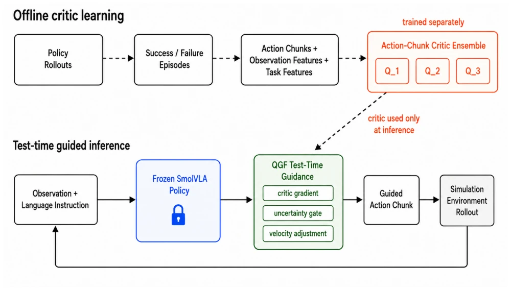

This paper adds an "inference-time external module" to the frozen Flow-Matching VLA. The core is using an offline-trained Critic to provide gradient guidance during the sampling phase, rather than fine-tuning the base model. The advantage is saving compute, suitable for lightweight deployment like SmolVLA; the disadvantage is worrying generalization, test set improvement is only 2.5%, a bit "much ado about nothing". Although it proves the feasibility of Q-guided under frozen policy, the Critic's out-of-distribution behavior remains a fatal flaw. Do not expect this to solve all long-tail problems; currently it looks more like a feasibility verification than a mature solution. For consumer-grade GPU scenarios, this weight-update-free adaptation is indeed tempting, but without solving the generalization bottleneck, the actual deployment risk is high. The paper honestly reports negative results, which is commendable, but it is still far from robustness.
Existing VLAs such as RT-1 [4], RT-2 [5] are strong, but fine-tuning costs are high and hardware-sensitive. SmolVLA [12] is lightweight, but still fails during task distribution shift or early error accumulation. The LIBERO benchmark [13] exposes the fragility of language-conditioned operations under distribution changes. Existing methods either fully fine-tune or perform action reordering [25], lacking lightweight inference-time adaptation. This paper aims to explore improving performance through Critic gradient guidance without updating the base policy, solving the problems of expensive fine-tuning and data limitations. This modular adaptation path is particularly critical when users have only a small amount of local task data, avoiding expensive hardware-sensitive fine-tuning. Additionally, the iterative nature of Flow-Matching naturally suits this inference-time guidance, requiring no retraining of the generator.
The overall Pipeline is divided into three steps: offline collection of frozen policy Rollouts to train Critic ensemble; inference-time freezing of SmolVLA, computing Critic gradients at each reverse flow sampling step; finally update Flow velocity. Innovations: 1. For the SmolVLA reverse time flow convention, derived the correct gradient sign to avoid direction errors. 2. Critic uses VLM hidden states as task features, stronger generalization than Task-ID. 3. Introduced uncertainty gating, suppressing harmful gradients based on ensemble divergence. Data flow is: Rollout -> Critic Train -> Inference Guidance. Critics only affect sampling trajectories through action gradients, not backpropagating to VLA. Velocity update formula is v_guided = v_t - m * clip(g, c) / beta, ensuring gradient direction conforms to reverse flow sampling logic. This design makes the Critic a pluggable inference layer, rather than part of the policy.

Fig. 1. System overview of Guided Action Flow. Offline rollouts from the frozen policy are converted into success/failure episodes and action-chunk training examples for a separately trained critic ensemble. At test time, SmolVLA remains frozen while QGF uses the critic ensemble through critic gradients, uncertainty gating, and velocity adjustment to guide action-chunk generation during closed-loop LIBERO evaluation.
实验Experiments
在 LIBERO 基准测试，基线为冻结 SmolVLA。指标为成功率。单任务提升显著（68.0%->82.0%），多家族验证提升 10%。但 Held-out 测试提升仅 2.5%，Spatial-only 转移甚至负提升。说明 Critic 泛化是瓶颈。验证集表现可能高估测试集。超参数敏感，需验证集调参。Table III 显示单任务增益明显，但 Table VI 显示测试集增益微弱。Spatial-only 转移失败表明单一任务家族数据不足以支撑泛化。此外，LIBERO-PRO 零样本成功率接近零，限制了该方法的评估范围，需更多数据覆盖。
Tested on the LIBERO benchmark, baseline is frozen SmolVLA. Metric is success rate. Single task improvement is significant (68.0%->82.0%), multi-family validation improvement 10%. But Held-out test improvement is only 2.5%, Spatial-only transfer even negative improvement. Indicates Critic generalization is the bottleneck. Validation set performance may overestimate the test set. Hyperparameter sensitive, needs validation set tuning. Table III shows single task gain is obvious, but Table VI shows test set gain is weak. Spatial-only transfer failure indicates single task family data is insufficient to support generalization. Additionally, LIBERO-PRO zero-shot success rate is near zero, limiting the evaluation scope of this method, requiring more data coverage.